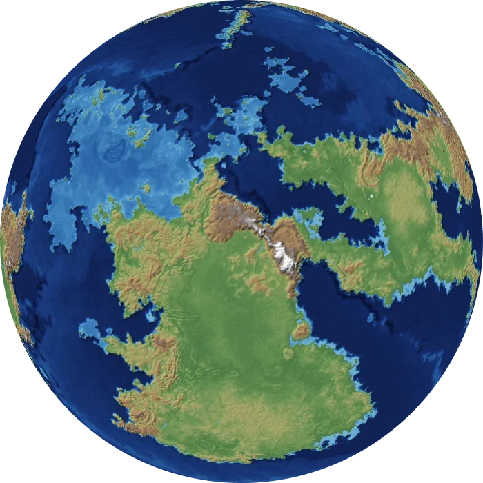
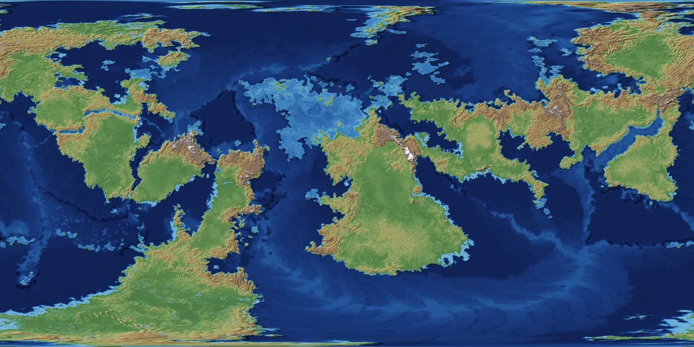

A studio of planet tools
Believable worlds, from the ground up.
Free planet tools that take you from a blank page to a world that makes sense. Plates drift, ranges rise where they meet, and rain falls where the wind carries it.
Free and open sourceNo account, no install. The maps you make are yours.

Orogen tools
Each a different way into a believable world.
Generate
A planet in seconds from a few sliders. Reshape any plate you don’t like and build again.
The most phone-friendly of the three.
Open GenerateImport Heightmap
Bring a map you drew. See what its winds, rain and climate zones would really be.
PNG, JPEG or WebP. It starts with Earth.
Open Import HeightmapEvolution
A planet with a past. Watch it rift and collide, then add detail to the moment you choose.
Best on a desktop for now; its Geology and Food views are in beta.
Open EvolutionFrom the atlas
Worlds to explore
Made in Orogen. Pick a world and a view.

Resources I love
The blogs, channels and tools that shaped how I think about worlds. If you like World Orogen, you'll probably like these too.
Worldbuilding
-
 ArtifexianYouTube
ArtifexianYouTubeThe channel that got me to fall in love with worldbuilding, and made cartography seem approachable to a non-artist like myself. They have a deep catalog worth exploring, going over all sorts of scientific worldbuilding topics.
-
 Worldbuilding PastaBlog
Worldbuilding PastaBlogThe biggest single inspiration for this project. It goes more in depth than anywhere else on the internet into how you can make a realistic planet. Following their guides will get you something better than any tool out there can provide.
-
 Madeline James WorldbuildsYouTube
Madeline James WorldbuildsYouTubeAn excellent addition to Artifexian and Worldbuilding Pasta. She provides a more analogue guide to the same topics, but with the same scientific angle. She also goes very deep into the cultural and societal implications of the worlds she builds, and backs it up with in-depth research. Her writing channel, Madeline James Writes, is worth a look too.
-
 Worldbuilding NotesYouTube
Worldbuilding NotesYouTubeA lovely worldbuilding channel that helps me let go of “realistic” worlds, while at the same time creating some of the most beautiful, strange, and believable worlds.
Behind this project
-
 Kilroy’s KartographyYouTube
Kilroy’s KartographyYouTubeA brilliant channel going over a tool called Gaea, which uses noise and simulated erosion to create realistic landscapes. They pioneered using it for world-scale projects, and were a conceptual inspiration for this project. (I regularly export regions of the maps I generate here to Gaea for a nice finish.)
-
 Fractal PhilosophyYouTube
Fractal PhilosophyYouTubeThe original project was heavily and directly inspired by their video Maps: Fractals, Tectonics and the Fourth Dimension, but their channel goes deep into philosophy, design, games and culture. Really worth checking out for any worldbuilder.
Stories and history
-
 Hello Future MeYouTube
Hello Future MeYouTubeA great channel for worldbuilding and writing advice (and for Avatar: The Last Airbender references). An excellent, accessible place for newcomers to worldbuilding, with some nuggets of wisdom for the veteran worldbuilder too.
-
 Overly Sarcastic ProductionsYouTube
Overly Sarcastic ProductionsYouTubeA huge catalog of videos going over history, mythology, story tropes, and so much more. An excellent place to get inspired and have fun.
-
 Historia CivilisYouTube
Historia CivilisYouTubeInteresting dives into history with a fun, blocky art style. A must if you’re interested in Roman history (though there are plenty of other topics as well).